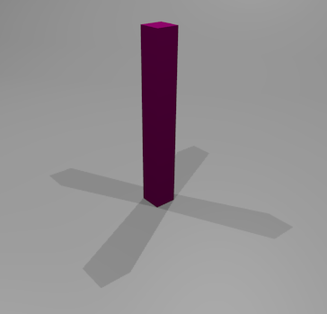

Sólo iluminar
Tratar de conseguir una iluminación aceptable con una sola lámpara es una utopía. Debemos hacer ensayos con una lámpara para ver su funcionamiento y cómo le afectan las variaciones en los parámetros; pero una buena ambientación tendrá varios puntos luminosos a no ser que queramos recurrir a iluminaciones globales como la Oclusión ambiental.
Los distintos puntos luminosos tienen que completarse armónicamente. En esta búsqueda es muy probable que deban convivir unas que generan sombras con otras que no lo hacen. Las lámparas que no crean sombras son muy importantes porque ambientan, tiñen de color una escena... Si todas las lámparas generan sombras arrojadas se produce un efecto muy desagradable como el de un futbolista en un partido nocturno donde proyecta cuatro sombras a la vez.

Para que una lámpara ilumine y no genere sombras arrojadas debemos cambiar la opción Sombra por trazado por Sin sombra en la botonera Sombra. Así la escena anterior podría contar con las cuatro lámparas Puntual  iluminando, mientras que sólo una de ellas origina la sombra arrojada.
iluminando, mientras que sólo una de ellas origina la sombra arrojada.